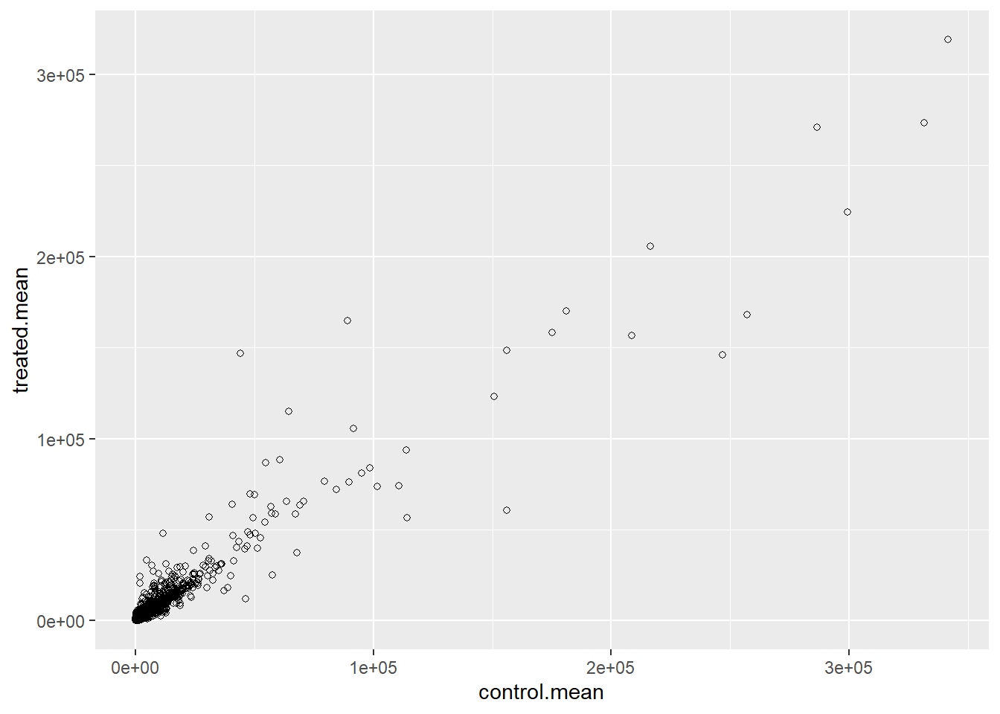

counts <- read.csv("airway_scaledcounts.csv", row.names = 1)
metadata <- read.csv("airway_metadata.csv")Class13: Transcriptomics and RNA-Seq data
Background
Today We will perform an RNASeq analysis of the effects of a common sertoid on airway cells.
In particular, we will be looking at dexamethasone (herafter just called “dex”) on idfferent airway smooth muscle cell lines (ASM cells).
Data Import
Wee need two different inputs:
- countData: with genes in rows and experiments in columns
- colData: meta data that describes the columns in countData
head(counts) SRR1039508 SRR1039509 SRR1039512 SRR1039513 SRR1039516
ENSG00000000003 723 486 904 445 1170
ENSG00000000005 0 0 0 0 0
ENSG00000000419 467 523 616 371 582
ENSG00000000457 347 258 364 237 318
ENSG00000000460 96 81 73 66 118
ENSG00000000938 0 0 1 0 2
SRR1039517 SRR1039520 SRR1039521
ENSG00000000003 1097 806 604
ENSG00000000005 0 0 0
ENSG00000000419 781 417 509
ENSG00000000457 447 330 324
ENSG00000000460 94 102 74
ENSG00000000938 0 0 0metadata id dex celltype geo_id
1 SRR1039508 control N61311 GSM1275862
2 SRR1039509 treated N61311 GSM1275863
3 SRR1039512 control N052611 GSM1275866
4 SRR1039513 treated N052611 GSM1275867
5 SRR1039516 control N080611 GSM1275870
6 SRR1039517 treated N080611 GSM1275871
7 SRR1039520 control N061011 GSM1275874
8 SRR1039521 treated N061011 GSM1275875Q1: How many genes are in this data set?
nrow(counts)[1] 38694There are 38694 genes
Q2: How many ‘control’ cell lines do we have
table(metadata$dex)
control treated
4 4 sum(metadata$dex == "control")[1] 4There are four controls
Differential Gene Expression
We have 4 replicate treated (drug) and control (no drug) columns/experiments in our counts object.
We want one “mean” value for each gene (rows) in “treated” and one mean value for each gene in “control” cols.
Step 1. Find all “control” columns in counts
control.inds <- metadata$dex == "control"Step 2. Extract these coulumns from the data matrix into a new object called control.counts
control.counts <- counts[ ,control.inds]Step 3. Calculate the mean value for each gene
control.mean <- rowMeans(control.counts)Q3. How would you make the above code in either approach more robust? Is there a function that could help here?
The code is not robust because it relies on positional matching between metadata and counts. If additional samples are added or the order changes, the treated columns may be misaligned. A more robust approach is to align samples by their IDs (using match()) so that the correct columns are selected regardless of order.
Q4. Follow the same procedure for the treated samples (i.e. calculate the mean per gene across drug treated samples and assign to a labeled vector called treated.mean)
Q. Now do the same thing for the “treated” columns / experiments
treated.inds <- metadata$dex == "treated"
treated.counts <- counts[ ,treated.inds]
treated.mean <- rowMeans(treated.counts)Q5 (a). Create a scatter plot showing the mean of the treated samples against the mean of the control samples. Your plot should look something like the following.
Let’s generate a quick plot
meancounts <- data.frame(control.mean,treated.mean)
plot(meancounts)
Q5 (b).You could also use the ggplot2 package to make this figure producing the plot below. What geom_?() function would you use for this plot?
library(ggplot2)Warning: package 'ggplot2' was built under R version 4.4.3ggplot(data = meancounts, aes(x = control.mean, y = treated.mean)) +
geom_point(shape = 21)
Geom_point(shape = 21) is needed to create this plot
Q6. Try plotting both axes on a log scale. What is the argument to plot() that allows you to do this?
Let’s log transform this plot
plot(meancounts, log="xy")Warning in xy.coords(x, y, xlabel, ylabel, log): 15032 x values <= 0 omitted
from logarithmic plotWarning in xy.coords(x, y, xlabel, ylabel, log): 15281 y values <= 0 omitted
from logarithmic plot
The argument log="xy" is needed to create a log graph of both axis
N.B We most often use log2 for this type of data because it makes the interpretation much more useful
Treated/Control us called “fold-change”
If ther was no change, we would have a log2-fc of zero:
log2(10/10)[1] 0If we had double the amount of transcript around, we would have a log2-fc of 1:
log2(20/10)[1] 1If we had half as much transcript around, we would have a log2fc of -1:
log2(5/10)[1] -1. Calculate a log2 fold change value for all our genes and add it as a new colun to our
meancountsobject.
meancounts$log2fc <- log2( meancounts$treated.mean/ meancounts$control.mean)
head(meancounts) control.mean treated.mean log2fc
ENSG00000000003 900.75 658.00 -0.45303916
ENSG00000000005 0.00 0.00 NaN
ENSG00000000419 520.50 546.00 0.06900279
ENSG00000000457 339.75 316.50 -0.10226805
ENSG00000000460 97.25 78.75 -0.30441833
ENSG00000000938 0.75 0.00 -Infzero.vals <- which(meancounts[,1:2]==0, arr.ind=TRUE)
to.rm <- unique(zero.vals[,1])
mycounts <- meancounts[-to.rm,]
head(mycounts) control.mean treated.mean log2fc
ENSG00000000003 900.75 658.00 -0.45303916
ENSG00000000419 520.50 546.00 0.06900279
ENSG00000000457 339.75 316.50 -0.10226805
ENSG00000000460 97.25 78.75 -0.30441833
ENSG00000000971 5219.00 6687.50 0.35769358
ENSG00000001036 2327.00 1785.75 -0.38194109Q7. What is the purpose of the arr.ind argument in the which() function call above? Why would we then take the first column of the output and need to call the unique() function?
arr.ind = TRUE makes which() return row and column indices instead of a single vector, allowing us to identify which genes contain zero values. We then take the first column to get the row indices (genes) and use unique() to avoid listing the same gene multiple times if it has zeros in both conditions.
up.ind <- mycounts$log2fc > 2
down.ind <- mycounts$log2fc < (-2)Q8. Using the up.ind vector above can you determine how many up regulated genes we have at the greater than 2 fc level?
sum(up.ind)[1] 250There are 250 up-regulated genes
Q9. Using the down.ind vector above can you determine how many down regulated genes we have at the greater than 2 fc level?
sum(down.ind)[1] 367There are 367 down regulated genes
Q10. Do you trust these results? Why or why not?
I do not trust these results because the fold change is not compared to any statistics. We have not compared these changes to a p-value to determine if they are significant or not. These results are misleading in their current form.
There are some “funky” log2fc values (Nan and -Inf) here that come about when ever we have a 0 mean count values. Typically we would remove these genes from any further analysis - as we can’t say anything about them if we have no data for them
DESeq ANalysis
Let’s do this analysis with an estimate of statistical significance using DESeq2 package.
library(DESeq2)Warning: package 'matrixStats' was built under R version 4.4.3DESeq, like many bioconductor packages, want it’s input data in a very specific way.
dds <- DESeqDataSetFromMatrix(countData = counts,
colData = metadata,
design = ~dex)converting counts to integer modeWarning in DESeqDataSet(se, design = design, ignoreRank): some variables in
design formula are characters, converting to factorsRun the DESeq analysis pipeline
The main function is called DESeq()
dds <- DESeq(dds)estimating size factorsestimating dispersionsgene-wise dispersion estimatesmean-dispersion relationshipfinal dispersion estimatesfitting model and testingres <- results(dds)
head(res)log2 fold change (MLE): dex treated vs control
Wald test p-value: dex treated vs control
DataFrame with 6 rows and 6 columns
baseMean log2FoldChange lfcSE stat pvalue
<numeric> <numeric> <numeric> <numeric> <numeric>
ENSG00000000003 747.194195 -0.3507030 0.168246 -2.084470 0.0371175
ENSG00000000005 0.000000 NA NA NA NA
ENSG00000000419 520.134160 0.2061078 0.101059 2.039475 0.0414026
ENSG00000000457 322.664844 0.0245269 0.145145 0.168982 0.8658106
ENSG00000000460 87.682625 -0.1471420 0.257007 -0.572521 0.5669691
ENSG00000000938 0.319167 -1.7322890 3.493601 -0.495846 0.6200029
padj
<numeric>
ENSG00000000003 0.163035
ENSG00000000005 NA
ENSG00000000419 0.176032
ENSG00000000457 0.961694
ENSG00000000460 0.815849
ENSG00000000938 NA36000 * 0.05[1] 1800Volcano Plot
This is a main summary results figure from these kinds of strudies. Its a plot of Log2-foldchange vs (Adjusted) P-value.
plot(res$log2FoldChange,
res$padj)
Again, this y-axis is highly skewed and needs log transforming and flip the y-axis with a minus sign so it looks like every other volcano plot.
plot(res$log2FoldChange,
-log(res$padj))
abline(v = -2, col="red") #Setting Threshold for upregulated/downregulate
abline(v = 2, col="red")
abline(h = -log(0.05), col = "red") #Setting Threshold for Significant gene expression changes
Adding some color annotation
Start with a default base color “gray”
mycols <- rep("gray", nrow(res))
mycols[res$log2FoldChange > 2] <- "blue"
mycols[res$log2FoldChange < -2] <- "darkgreen"
mycols[res$padj >= 0.05 ] <- "gray"
plot(res$log2FoldChange,
-log(res$padj),
col = mycols)
Q. Make a presentation quality ggplot version of this plot. Include clear axis labels, a clean theme, your custom colors, cuti-off lines and a plot title.
mycols <- rep("gray", nrow(res))
mycols[res$log2FoldChange > 2] <- "blue"
mycols[res$log2FoldChange < -2] <- "darkgreen"
mycols[res$padj >= 0.05 ] <- "gray"
ggplot(res) +
aes(x=res$log2FoldChange, y= -log(res$padj)) +
geom_point(shape= 21, col = mycols) +
geom_abline(intercept = 0.05, slope = 0, lty = 4, col = "red") +
geom_vline(xintercept = c(2,-2), lty = 4, col = "red") +
labs(title = "Volcano Plot of Significant Fold changes", x = "Log2-FoldChange", y = "-log(Adjusted P-Value)") +
theme_minimal()Warning: Removed 23549 rows containing missing values or values outside the scale range
(`geom_point()`).
##Save our results
Write a CSV file
write.csv(res, file = "results.csv")Add annotation data
We need to add missing annotation data to our main res results object. This includes the common gene “symbol”
head(res)log2 fold change (MLE): dex treated vs control
Wald test p-value: dex treated vs control
DataFrame with 6 rows and 6 columns
baseMean log2FoldChange lfcSE stat pvalue
<numeric> <numeric> <numeric> <numeric> <numeric>
ENSG00000000003 747.194195 -0.3507030 0.168246 -2.084470 0.0371175
ENSG00000000005 0.000000 NA NA NA NA
ENSG00000000419 520.134160 0.2061078 0.101059 2.039475 0.0414026
ENSG00000000457 322.664844 0.0245269 0.145145 0.168982 0.8658106
ENSG00000000460 87.682625 -0.1471420 0.257007 -0.572521 0.5669691
ENSG00000000938 0.319167 -1.7322890 3.493601 -0.495846 0.6200029
padj
<numeric>
ENSG00000000003 0.163035
ENSG00000000005 NA
ENSG00000000419 0.176032
ENSG00000000457 0.961694
ENSG00000000460 0.815849
ENSG00000000938 NAWe will use R and bioconductor to do this “ID Mapping”
res05 <- results(dds, alpha=0.05)
summary(res05)
out of 25258 with nonzero total read count
adjusted p-value < 0.05
LFC > 0 (up) : 1236, 4.9%
LFC < 0 (down) : 933, 3.7%
outliers [1] : 142, 0.56%
low counts [2] : 9033, 36%
(mean count < 6)
[1] see 'cooksCutoff' argument of ?results
[2] see 'independentFiltering' argument of ?resultslibrary("AnnotationDbi")
library("org.Hs.eg.db")columns(org.Hs.eg.db) [1] "ACCNUM" "ALIAS" "ENSEMBL" "ENSEMBLPROT" "ENSEMBLTRANS"
[6] "ENTREZID" "ENZYME" "EVIDENCE" "EVIDENCEALL" "GENENAME"
[11] "GENETYPE" "GO" "GOALL" "IPI" "MAP"
[16] "OMIM" "ONTOLOGY" "ONTOLOGYALL" "PATH" "PFAM"
[21] "PMID" "PROSITE" "REFSEQ" "SYMBOL" "UCSCKG"
[26] "UNIPROT" We can use the mapIds() function to “translate” between any of these databases.
res$symbol <- mapIds(org.Hs.eg.db,
keys=row.names(res), # Our genenames
keytype="ENSEMBL", # The format of our genenames
column="SYMBOL") # The new format we want to add'select()' returned 1:many mapping between keys and columnsQ. Also add “ENTREZID”, GENENAME”
Q11. Run the mapIds() function two more times to add the Entrez ID and UniProt accession and GENENAME as new columns called res\(entrez, res\)uniprot and res$genename.
res$entrez <- mapIds(org.Hs.eg.db,
keys=row.names(res),
column="ENTREZID",
keytype="ENSEMBL")'select()' returned 1:many mapping between keys and columnsres$uniprot <- mapIds(org.Hs.eg.db,
keys=row.names(res),
column="UNIPROT",
keytype="ENSEMBL")'select()' returned 1:many mapping between keys and columnsres$genename <- mapIds(org.Hs.eg.db,
keys=row.names(res),
column="GENENAME",
keytype="ENSEMBL")'select()' returned 1:many mapping between keys and columnshead(res)log2 fold change (MLE): dex treated vs control
Wald test p-value: dex treated vs control
DataFrame with 6 rows and 10 columns
baseMean log2FoldChange lfcSE stat pvalue
<numeric> <numeric> <numeric> <numeric> <numeric>
ENSG00000000003 747.194195 -0.3507030 0.168246 -2.084470 0.0371175
ENSG00000000005 0.000000 NA NA NA NA
ENSG00000000419 520.134160 0.2061078 0.101059 2.039475 0.0414026
ENSG00000000457 322.664844 0.0245269 0.145145 0.168982 0.8658106
ENSG00000000460 87.682625 -0.1471420 0.257007 -0.572521 0.5669691
ENSG00000000938 0.319167 -1.7322890 3.493601 -0.495846 0.6200029
padj symbol entrez uniprot
<numeric> <character> <character> <character>
ENSG00000000003 0.163035 TSPAN6 7105 A0A087WYV6
ENSG00000000005 NA TNMD 64102 Q9H2S6
ENSG00000000419 0.176032 DPM1 8813 H0Y368
ENSG00000000457 0.961694 SCYL3 57147 X6RHX1
ENSG00000000460 0.815849 FIRRM 55732 A6NFP1
ENSG00000000938 NA FGR 2268 B7Z6W7
genename
<character>
ENSG00000000003 tetraspanin 6
ENSG00000000005 tenomodulin
ENSG00000000419 dolichyl-phosphate m..
ENSG00000000457 SCY1 like pseudokina..
ENSG00000000460 FIGNL1 interacting r..
ENSG00000000938 FGR proto-oncogene, ..Save annotated results to a CSV file
write.csv(res, file = "results.annotated.csv")Pathway Analysis
What known biological oathways do our differential expressed genes overlap (i.e. play a role in)
There are many bioconductor packages to do this type of analysis.
We will use one of the oldest called gage along with pathview to render nice pics of the pathways we find.
We can install these with the command BiocManager::install( c("pathview", "gage", "gageData") )
library(pathview)
library(gage)
library(gageData)Have a wee peak what is in gageData
# Examine the first 2 pathways in this kegg set for humans
data(kegg.sets.hs)
head(kegg.sets.hs, 2)$`hsa00232 Caffeine metabolism`
[1] "10" "1544" "1548" "1549" "1553" "7498" "9"
$`hsa00983 Drug metabolism - other enzymes`
[1] "10" "1066" "10720" "10941" "151531" "1548" "1549" "1551"
[9] "1553" "1576" "1577" "1806" "1807" "1890" "221223" "2990"
[17] "3251" "3614" "3615" "3704" "51733" "54490" "54575" "54576"
[25] "54577" "54578" "54579" "54600" "54657" "54658" "54659" "54963"
[33] "574537" "64816" "7083" "7084" "7172" "7363" "7364" "7365"
[41] "7366" "7367" "7371" "7372" "7378" "7498" "79799" "83549"
[49] "8824" "8833" "9" "978" The main gage() function that does the work wants a single vector as input.
foldchanges <- res$log2FoldChange
names(foldchanges) <- res$symbol
head(foldchanges) TSPAN6 TNMD DPM1 SCYL3 FIRRM FGR
-0.35070302 NA 0.20610777 0.02452695 -0.14714205 -1.73228897 The KEGG database uses ENTREZ ids so we need to provide those in our input vector for gage
names(foldchanges) <- res$entrezNo we run gage()
# Get the results
keggres = gage(foldchanges, gsets=kegg.sets.hs)What is in the output object keggres
attributes(keggres)$names
[1] "greater" "less" "stats" # Look at the first three down (less) pathways
head(keggres$less, 3) p.geomean stat.mean p.val
hsa05332 Graft-versus-host disease 0.0004250461 -3.473346 0.0004250461
hsa04940 Type I diabetes mellitus 0.0017820293 -3.002352 0.0017820293
hsa05310 Asthma 0.0020045888 -3.009050 0.0020045888
q.val set.size exp1
hsa05332 Graft-versus-host disease 0.09053483 40 0.0004250461
hsa04940 Type I diabetes mellitus 0.14232581 42 0.0017820293
hsa05310 Asthma 0.14232581 29 0.0020045888We can use the pathview() function to render a figure of any of these pathways along with annitation of our DEGs.
Let’s see the hsa05310 Asthma pathway with our DEGs colored up:
pathview(gene.data=foldchanges, pathway.id="hsa05310")'select()' returned 1:1 mapping between keys and columnsInfo: Working in directory C:/Users/ambro/OneDrive/Desktop/BIMM 143/Class13Info: Writing image file hsa05310.pathview.png
Q. Can you render the same and insert here the pathway figures for “Graft-versus-host disease” and “Type I diabetes mellitus”
pathview(gene.data=foldchanges, pathway.id="hsa05332")'select()' returned 1:1 mapping between keys and columnsInfo: Working in directory C:/Users/ambro/OneDrive/Desktop/BIMM 143/Class13Info: Writing image file hsa05332.pathview.pngpathview(gene.data=foldchanges, pathway.id="hsa04940")'select()' returned 1:1 mapping between keys and columnsInfo: Working in directory C:/Users/ambro/OneDrive/Desktop/BIMM 143/Class13Info: Writing image file hsa04940.pathview.png